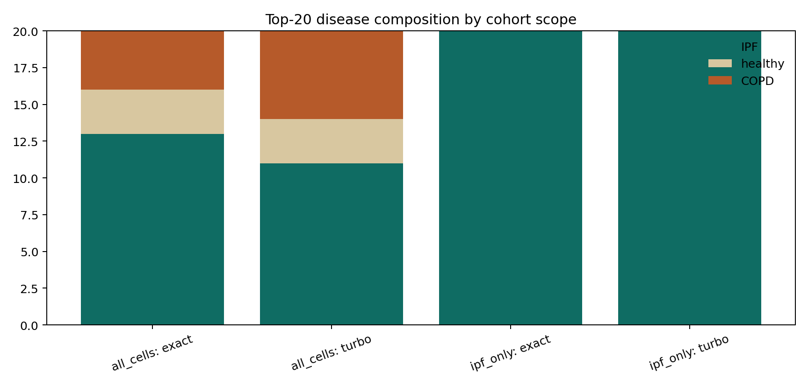

Unfiltered atlas
The exact top-20 still mixes IPF, healthy, and COPD neighbors.
This article reports an executed cohort-triage analysis for the IPF alveolar macrophage centroid, comparing whole-atlas retrieval with IPF-restricted retrieval.

| Scope | Method | Active cells | Avg latency (ms) | Top-20 alveolar macrophage fraction | Top-20 IPF fraction | Top-20 overlap vs exact |
|---|---|---|---|---|---|---|
all_cells | exact | 50,000 | 12.34 | 0.95 | 0.65 | 1.00 |
all_cells | turboquant-prod-b3 | 50,000 | 57.42 | 0.95 | 0.55 | 0.10 |
ipf_only | exact | 23,803 | 8.97 | 1.00 | 1.00 | 1.00 |
ipf_only | turboquant-prod-b3 | 23,803 | 29.37 | 0.90 | 1.00 | 0.30 |
The exact top-20 still mixes IPF, healthy, and COPD neighbors.
Both exact and TurboQuant return an all-IPF top-20 once the cohort is restricted.
Metadata filters change the scientific interpretation of retrieval, so they belong in the main workflow and the final report.